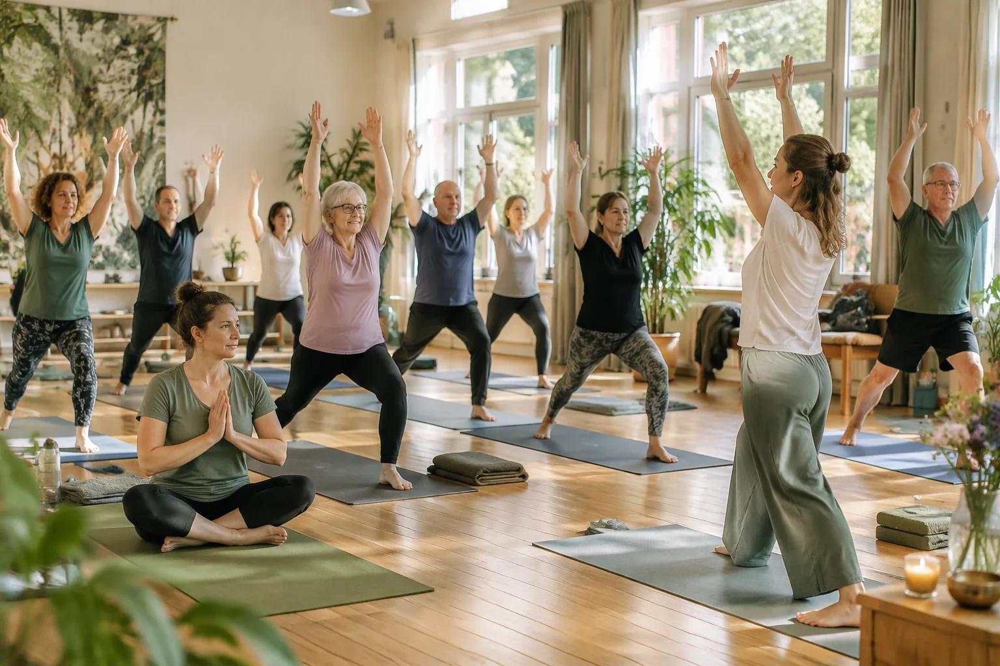
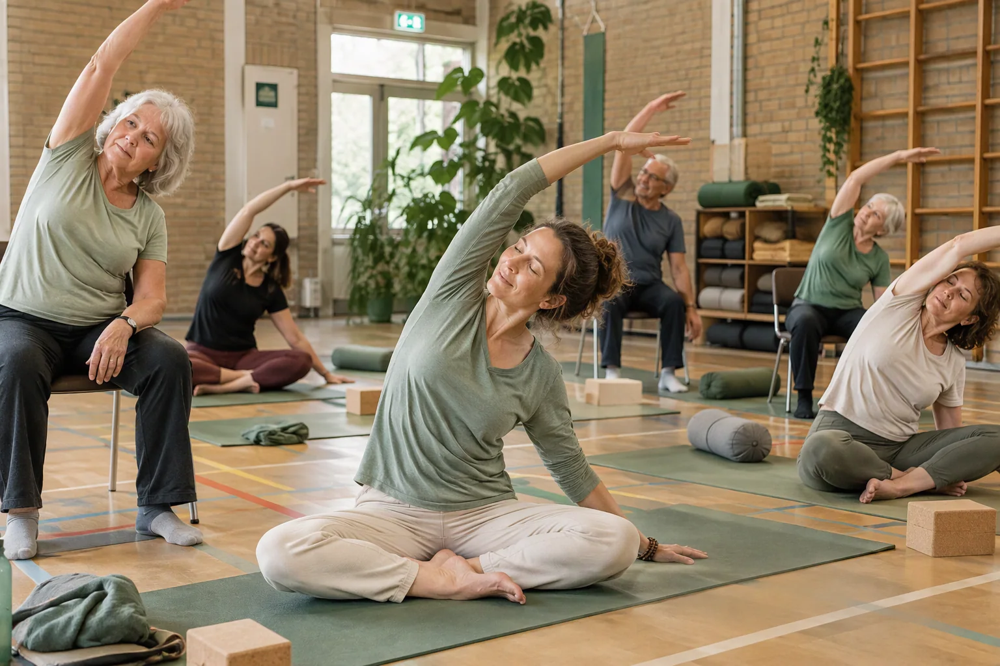
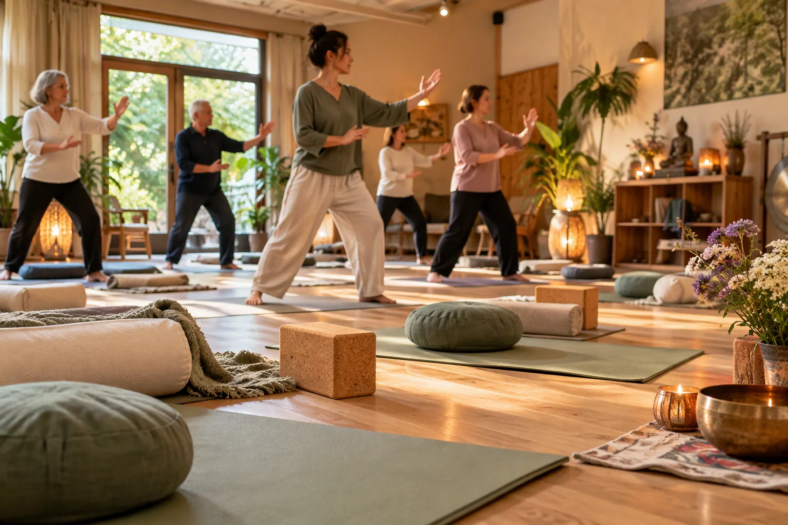

Op jouw niveau
Je hoeft niet lenig te zijn. Beweeg met aandacht voor je eigen lichaam en mogelijkheden.

Yoga in Brakel en Poederoijen
Wekelijkse yogalessen voor alle leeftijden en ieder niveau. Je hoeft niet lenig of ervaren te zijn. Je bent welkom zoals je bent.
Gratis proefles · Geen abonnement of lidmaatschap nodig
Yogaschool sinds 2012
Yogaschool Balans biedt toegankelijke lessen in Brakel en Poederoijen, midden in de Bommelerwaard.
In iedere les is er aandacht voor houding, mindfulness en ademhalingstechnieken. De les is iedere week anders en combineert elementen uit Hatha Yoga, Kundalini en Tai Chi.
De oefeningen helpen je bewuster te bewegen en tijd te nemen voor ontspanning. Je doet mee binnen je eigen mogelijkheden. Daardoor zijn de lessen geschikt voor alle leeftijden, zowel voor beginners als voor mensen met yoga-ervaring.

Laagdrempelig en persoonlijk
Je hoeft niet lenig te zijn. Beweeg met aandacht voor je eigen lichaam en mogelijkheden.
Een afwisselende combinatie van yogahoudingen, ademhaling, mindfulness en Tai Chi.
Je hoeft geen abonnement of lidmaatschap af te sluiten. Begin met een gratis proefles.
Wekelijkse lessen
De lessen vinden iedere woensdag en vrijdag plaats. Neem voor je eerste bezoek even contact op voor een gratis proefles.
Woensdag
19.30 – 20.30 uur
Vrijdag
18.30 – 19.30 uur

“Niet presteren, maar met aandacht bewegen en ontdekken wat jouw lichaam nodig heeft.”
Vrijblijvend kennismaken
Ontdek rustig of de lessen bij je passen. Je hoeft geen abonnement of lidmaatschap af te sluiten.
De lessen zijn goed bereikbaar voor deelnemers uit Brakel, Poederoijen, Zaltbommel, Giessen en omliggende dorpen in de Bommelerwaard. Kies op woensdag voor Brakel of op vrijdag voor Poederoijen.
Praktische informatie
Jazeker. Je hebt geen yoga-ervaring nodig om mee te doen. De oefeningen worden rustig uitgelegd en je doet mee op je eigen niveau en binnen je eigen mogelijkheden.
Yogaschool Balans geeft yogalessen in Sporthal Brakel, Burg. Posweg 46 in Brakel, en in Dorpshuis Podarwic, Burg. Posweg 1 in Poederoijen.
Ja. Neem voor je eerste bezoek contact op voor een gratis proefles. Je kunt direct een WhatsApp-bericht sturen, een e-mail sturen of bellen naar 06 11 35 20 82.
Neem een handdoek van ongeveer je eigen lichaamslengte mee. Heb je zelf geen yogamat? Geen probleem, er is een yogamat voor je beschikbaar.
De les is iedere week anders en combineert elementen uit Hatha Yoga, Kundalini en Tai Chi.
In Brakel is de yogales op woensdag van 19.30 tot 20.30 uur. In Poederoijen is de yogales op vrijdag van 18.30 tot 19.30 uur.
Aanmelden kan eenvoudig via WhatsApp, via e-mail of telefonisch via 06 11 35 20 82.
De yogales in Brakel wordt gegeven in Sporthal Brakel, Burg. Posweg 46, 5306 GE Brakel . Bekijk Sporthal Brakel op Google Maps →
De yogales in Poederoijen wordt gegeven in Dorpshuis Podarwic, Burg. Posweg 1, 5307 HA Poederoijen . Bekijk Dorpshuis Podarwic op Google Maps →
De yogalessen worden gegeven door yogadocent Wieneke Meulman.